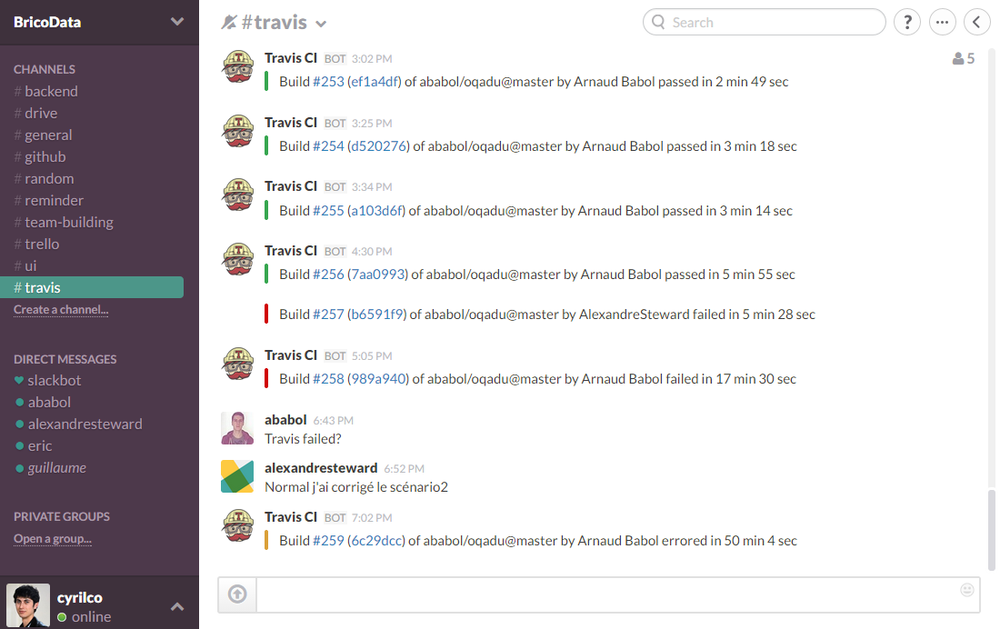
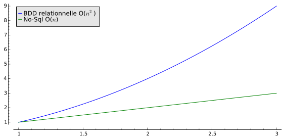
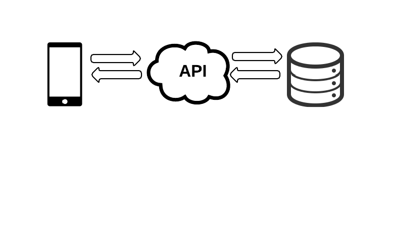
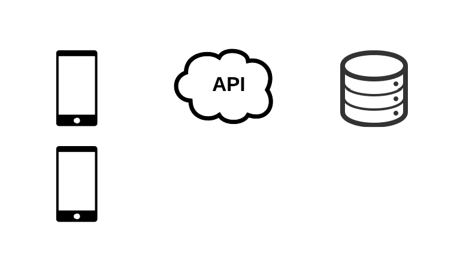
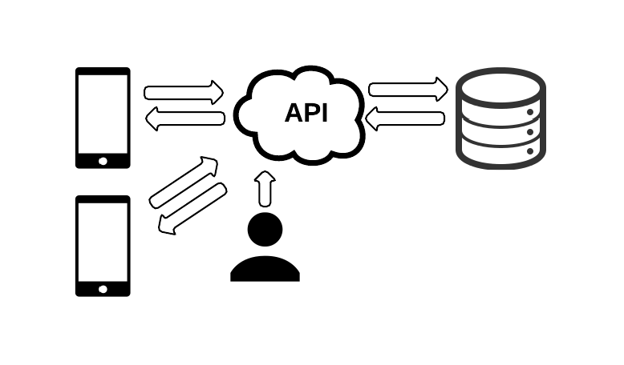
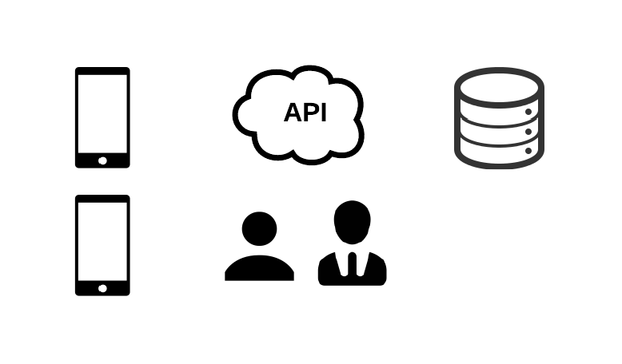

OQADU
Par Eric Allard, Arnaud Babol, Cyril Codron, Guillaume Simmoneau & Alexandre Steward
C'est lors du :

qu'ils ont eu une idée :

Eric
Allard

Guillaume
Simonneau

Cyril
Codron

Arnaud
Babol

Alexandre
Steward
Vente passant par le conseiller : 25% du CA de Leroy Merlin
Nos trois objectifs
- Rendre le conseil plus efficace et plus rapide
- Proposer des produits plus adaptés
- Convertir le temps d'attente en temps à valeur ajoutée
OQADU
Ou quand l'attente devient utile
Par Eric Allard, Arnaud Babol, Cyril Codron, Guillaume Simmoneau & Alexandre Steward
Une solution de file d'attente intelligente
Le client est gagnant
- Temps d'attente plus court
- Pertinence des produits proposés
- Pas de perte de temps
Le magasin est gagnant
- Meilleure force de vente des conseillers
- Plus grand nombre de clients conseillés
- Récupération des données client
Objectifs atteints
- Rendre le conseil plus efficace et plus rapide
- Proposer des produits plus adaptés
- Convertir le temps d'attente en temps à valeur ajoutée
Comment avons-nous mené à bien ce projet ?
Réunions Hebdomadaires
- Etat des lieux de notre avancée
- Identification des tâches restantes
- Répartition sur celles-ci
Gestionnaire de projet
- Outil simple et souple
- Qui puisse être utilisé par tous
- Qui pourra être utilisé tout au long du projet
- Qui permet de visualiser notre avancement rapidement
Utilisation de Trello

Utilisation de Trello

Utilisation de Trello

Utilisation de Trello

Utilisation de Trello

Communication d'équipe
- Outil simple et multiplateforme
- Relié avec nos différents services
- Qui permet de simplifier la communication entre nous
- Qui permet de nous informer au moindre changement de l'application
Utilisation de Slack
Tests et Intégration Continue
TDD - Test Driven Development
Tests de l'API REST
Frisby.js
- Facilité d'utilisation, surcouche de jasmine-node
- Ses fonctions «expectJSON()» sont intéressantes.
TDD - Test Driven Development
Tests fonctionnels
Casper.js
- Tester le contenu de la page Web
- Remplir et soumettre des formulaires
- Cliquer et suivre les liens...
Intégration continue
Travis CI
- Travis permet :
- Quoi : d’automatiser des tâches de tests ou de déploiement d’un projet.
- Où : dans des environnements à chaque fois vierges.
- Quand : après un envoi de code sur le serveur.
- Comment : en préparant l’environnement (dépendances, données de tests…).
Intégration continue
Heroku
- Heroku permet :
- Le déploiement très rapide d'applications web dans le cloud.
- Lorsque Travis exécute les tests, le déploiement sur heroku n'est effectué que si les tests passent.
Intégration continue
Intégration continue
Intégration continue
Quels sont nos choix d'architecture ?
Design & UI
Ionic!
La puissance de:
La puissance de:
La puissance de:
Un conseiller virtuel à votre service
Modélisation des données
No-Sql
- Performances
- Redondance des données
-
Scalabilité :

Modélisation des données
MongoDB
- Documentation de premier ordre
- Grande communauté de développeurs
- Integré par de nombreux frameworks
Modélisation des données
Schémas

Modélisation des données
Schémas

Modélisation des données
Schémas

API
Pourquoi?
API
Pourquoi?
API
Pourquoi?
API
Pourquoi?
API
Pourquoi?
API
Node.js
- JSON nativement supporté
- Aucune étape de sérialisation
- Moins de code à produire
API
modules node.js:
- mongoose : interface mongoDB
- express : gestion des routes de l'API
- node-restful : interface mongoose et express
API
Comment?
Accès au données
Le jeu de données
- Problème : aucune donnée mise à disposition
-
Problème : requière un jeu de données conséquant
- insertion manuelle impossible
- insertion manuelle impossible
- Solution : aspirateur web
Aspirateur Web
Moteur de recommandations génerique
Gestion de la file d'attente
Notre besoin :
- Partager les données du client au le vendeur
- Avoir une file d'attente ordonnée de clients pour chacuns des rayons
- Donner accès à toute la file d'attente au vendeur
- Pouvoir notifier en temps réel le client de sa position dans la file d'attente
- Afficher en temps réel au vendeur quels sont les client qui ne sont pas encore pris en charge
Firebase ?
- Serveur et base de donnée
- Synchronise les données en temps réel
- Donne accès aux données via API
- Interface d'administration simple et puissante
- Très bonne intégration avec Angular.JS et donc ionic
Firebase dans OQADU
Synchronise les tableau de file d'attente avec l'app du vendeur
//Se connecte a la file d'attente du rayon
var ref = new Firebase("https://oqadu.firebaseio.com/" + queue + "/queue");
var sync = $firebase(ref);
//Recupere le tableau de file d'attente, toujours à jours
$scope.syncQueue = sync.$asArray();
Permet d'écouter des evenements sur la file d'atente
//Permet de lancer des fonctions sur des evenements
$scope.syncQueue.$watch(function(e){
console.log("Changement dans la file d'attente")
});
Outils de développement
Gestion des librairies


Installation des dépendances
Mise a jour des librairies
Lisibilité du code
- Feuille de style simplifiées en utilisant Sass
- Architecture cohérente du javascript et utilisation de template grâce Angular.js
- Simplification des routes de l'API grâce au framework node-restful
Automatisation

Compile le Sass en CSS automatiquement
Lance les installations des dependances via npm et bower
Avenir du produit
- Scanners distribués en magasin
- Démocratisation de l'application
- Notification à proximité du magasin
- Anticiper le besoin du client plutôt que de l'attendre
Merci pour votre attention !
L'équipe OQADU
Eric Allard, Arnaud Babol, Cyril Codron, Guillaume Simmoneau & Alexandre Steward